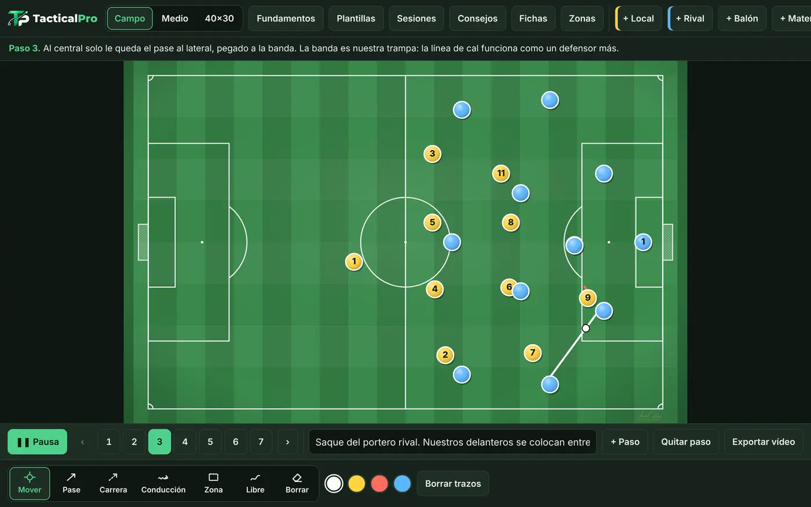
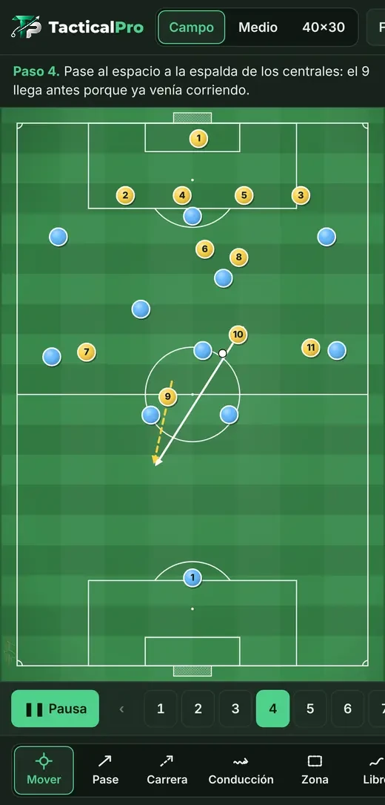
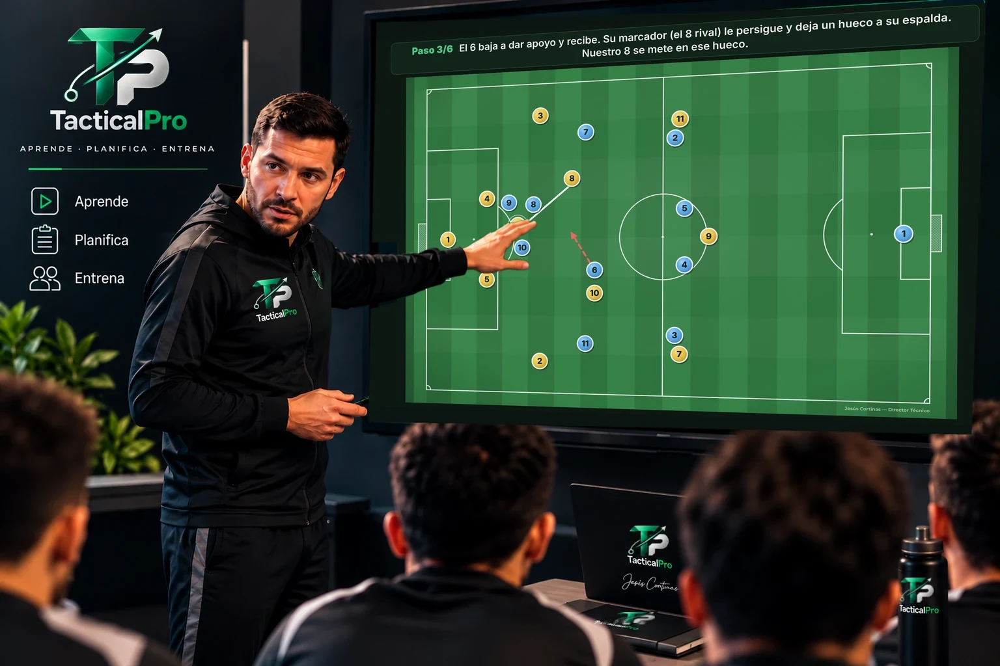
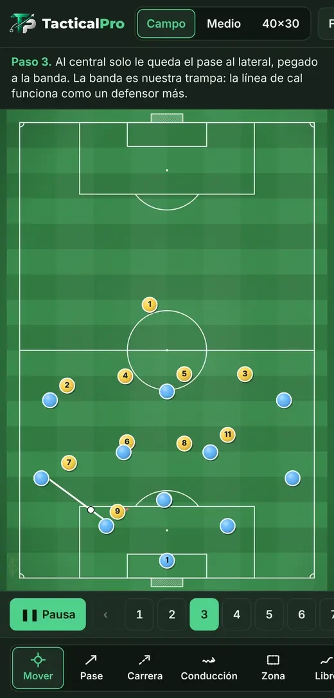
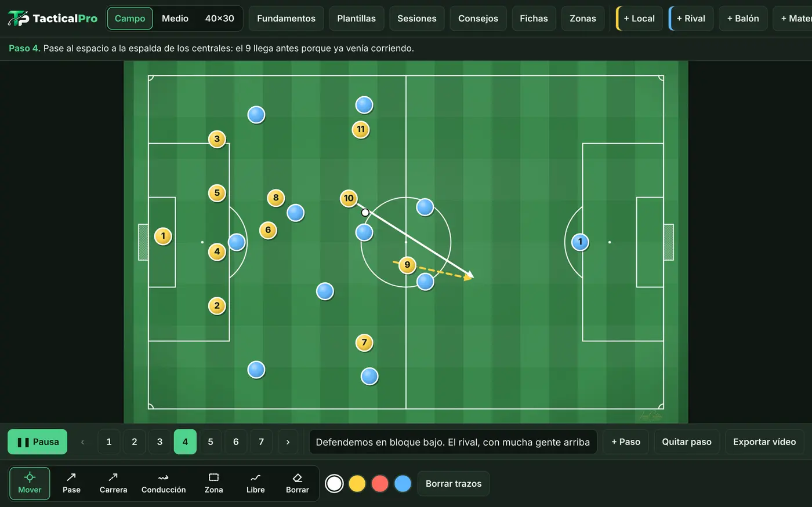
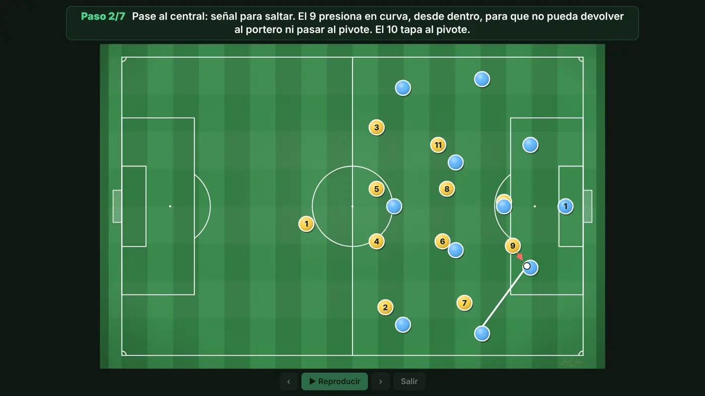

Tu visión.
Tu táctica.
Tu equipo.
Herramientas tácticas para quienes viven y enseñan el fútbol.
Crea y anima jugadas, consulta fundamentos y consejos, usa sesiones sugeridas y comparte tus ideas en vídeo o en la charla.
La versión actual es gratuita y puedes empezar sin registro. Funciona en móvil, tablet y ordenador, también sin conexión. Cómo instalarla en la pantalla de inicio.


Tres palabras, una app
TacticalPro te ayuda a preparar y comunicar tus ideas de fútbol.
Comprende los fundamentos
Consulta recursos prácticos: las fases del juego, los carriles, los sistemas y consejos de táctica y entrenamiento.
Ver la demostración →Prepara tus sesiones
Prepara y adapta sesiones, ejercicios y jugadas a tu equipo, partiendo de propuestas listas para usar.
Ver la demostración →Explica y lleva al campo
Explica tus ideas en la charla y llévalas al campo con jugadas animadas, modo proyector y vídeo.
Ver la demostración →TacticalPro no enseña por el entrenador ni decide por él. Le da recursos para aprender, preparar, representar y comunicar sus ideas de fútbol.
Mira cómo funciona
Cinco grabaciones reales de la app, ordenadas como la usarías: primero los recursos que tienes y después cómo crear y compartir tus jugadas.
Fundamentos y consejos
Consulta los fundamentos cuando los necesites: las fases del juego, los carriles, los sistemas, los bloques y un diccionario, explicados de forma sencilla. Y consejos prácticos de táctica, entrenamiento y gestión del grupo.
Grabación real, con el texto ampliado para que se lea bien.
Sesiones sugeridas y ejercicios
Sesiones de fútbol 11 de adultos ordenadas según los días que faltan para el partido (por ejemplo, MD-3 significa tres días antes). El recorrido es simple: eliges una sesión, ves sus bloques con minutos y objetivo, y cada ejercicio se abre animado en la pizarra para explicarlo o adaptarlo a tu equipo.
Son propuestas para usar y adaptar, no un calendario de temporada. Grabación real, con el menú ampliado.
De la pizarra vacía a la jugada animada
Un 11 contra 11 creado desde cero: colocas a los jugadores, dibujas pases y carreras y añades los pasos que quieras. A cada paso le puedes poner una descripción, que saldrá en el vídeo que exportes.
Resumen con cortes de una grabación real. Ver la grabación completa (2 min).
Tu vídeo, con tu marca
Al exportar eliges qué marca lleva el vídeo: tu nombre, tu logo o el escudo de tu club. Después activas la letra grande y el campo a todo el ancho, miras la vista previa y creas el MP4.
Grabación real, con el menú ampliado. Se ha omitido la espera mientras se crea el vídeo. Ver la grabación completa.
Así se ve el resultado
Salida de balón ante presión alta, 11 contra 11, en 6 pasos. Es el MP4 tal como sale de la app, listo para enviarlo por WhatsApp o proyectarlo en la charla.
Esta jugada está en la app: Plantillas › Generar espacios.
Abrir TacticalProTus ideas, en la charla
Con el modo proyector la jugada ocupa toda la pantalla, con la explicación de cada paso en grande. Pasas de paso con las flechas, con un mando de presentaciones o tocando a los lados.
En la pantalla, una captura real del modo proyector. La sala y el entrenador son una ilustración.

Y además

Fichas y trazos a tu gusto
Pases, carreras, conducciones y zonas. Fichas con número, nombre y colores de tu equipo. Dibuja con el dedo o con un lápiz como el S Pen.

Más de 70 plantillas
Sistemas, bloques, presión, transiciones, generar espacios, balón parado y ejercicios, listas para abrir y ajustar a tu equipo.

Sin conexión en el campo
Después de abrirla la primera vez funciona sin internet. Lo que creas se guarda en tu dispositivo.
Preguntas frecuentes
¿Cuánto cuesta?
La versión actual es gratuita y puedes empezar sin registro.
¿Hace falta registrarse?
No. No hay cuentas ni contraseñas: abres la app y empiezas. Tus jugadas y tu identidad se guardan en tu dispositivo.
¿Puedo pasar mis jugadas a otro móvil u ordenador?
Sí. En «Jugadas», pulsa «Exportar copia de seguridad» y se guarda un archivo con tus jugadas, sus pasos y textos, y tu identidad con el escudo. En el otro dispositivo, abre TacticalPro, ve a «Jugadas» y pulsa «Importar copia de seguridad». Se añade lo que falta sin borrar ni duplicar nada.
¿Cómo la instalo en la pantalla de inicio?
Ábrela con el botón «Abrir TacticalPro». En Android (Chrome), toca el menú ⋮ y elige «Instalar aplicación» o «Añadir a pantalla de inicio». En iPhone o iPad (Safari), toca Compartir y luego «Añadir a pantalla de inicio». En el ordenador (Chrome o Edge), pulsa el icono de instalar que aparece en la barra de direcciones.
¿En qué dispositivos funciona?
En móvil, tablet y ordenador, desde el navegador.
¿Necesito internet en el campo?
No. Una vez abierta la primera vez, funciona sin conexión.
¿Puedo usar un lápiz como el S Pen?
Sí. Con el lápiz puedes dibujar y mover las fichas, y con el botón lateral borras.
¿Sirve si estoy empezando en la táctica?
Sí. La sección Fundamentos explica las 4 fases, los carriles, los bloques y las alineaciones desde cero, con jugadas de ejemplo.
¿Cómo comparto una jugada con mi equipo?
Desde Exportar la guardas en vídeo MP4 o en imagen y la envías por WhatsApp, o la proyectas en la charla con el modo proyector.
Ayúdanos a mejorar TacticalPro
Cuéntanos qué te parece: leemos todas las respuestas. La app se sigue usando sin registro.
Únete a la comunidad
Es opcional: la app se usa igual sin hacerlo. Entra en el grupo de WhatsApp «TacticalPro · Entrenadores» para enterarte de las novedades y compartir ideas. Ayúdanos a crecer y prueba la versión para Android: escríbenos por WhatsApp o por correo desde «¿Necesitas ayuda?», aquí debajo.
¿Necesitas ayuda?
Si tienes una duda, encuentras un fallo o quieres proponer una mejora, escríbenos.
Empieza a planificar hoy
Aprende · Planifica · Entrena
La versión actual es gratuita y puedes empezar sin registro.